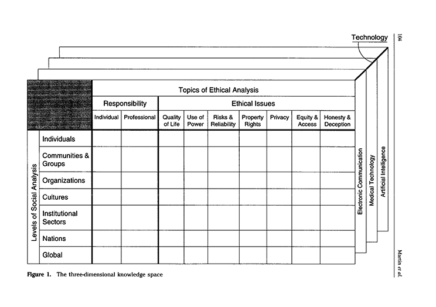

When deciding on your chosen technology/topic, it is best not to choose something too broad, but limit the focus e.g. consider the level of social analysis from the figure below.
E.g. What is the level of analysis - culture or organization; Responsibility - individual or pro fessional; Ethical issue - power or equity; Technology - medical, nuclear, mobile?
thanks to W3C for tutorial and adapted code from Style Examples
also thanks to WDN for HTML and CSS resources and any adapted code snippets from Mozilla Developer Network